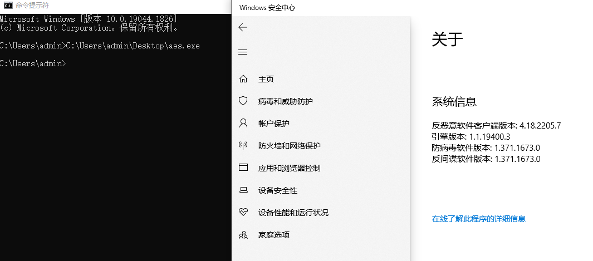
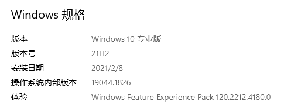
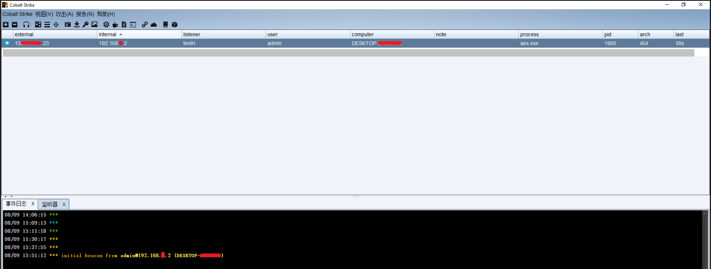

¶前言
最近看到一款过 defender 的免杀工具，挺感兴趣，之所以感兴趣的原因是我觉得目前最强的杀软就是defender
外面有很多过火绒、360之类的，不感兴趣，因为用武之地不大，而且自带的 defender 更强力，过 defender 的意义更大
X系列安全工具-AV免杀框架-BypassAV
具体介绍就不赘述了，看 README 就好
¶安装
现在 go 日趋火热，不学点真的跟不上了，这款工具也是 go 开发的
¶go
不赘述，我这里安装的是新版 go1.18.3，所以导致跑他的程序有很多问题，但又不想降级，所以就一步步排查，解决问题，死磕
¶run
1 | ShellcodeFrameWork_windows_amd64.exe -shellcodepath mimikatz.exe -o rc4.exe -key wing -encrypt rc4 -loadermethod uuid |
直接跑提示 ERROR:exec: "bin/go": file does not exist
看来环境变量没写好，所以把程序放到 go 目录 C:\Program Files\Go 再次运行，提示 STDERR: UUID_agent.go:33:2: cannot find package "github.com/google/uuid" in any of:
使用 go get github.com/google/uuid 报错，按提示改为 go install github.com/google/uuid@latest 报错 package github.com/google/uuid is not a main package ，查了一圈折腾了很久
解决方案
在目录 C:\Program Files\Go\src\ 下手动创建 github.com/google/ ，之后 git clone https://github.com/google/uuid.git，解决该问题
剩下的报错同理解决
1 | C:\Program Files\Go\src\golang.org\x>git clone https://github.com/golang/crypto.git |
至此，程序跑起来，解决高版本 go 运行问题
¶免杀效果
一开始我免杀mmk，但跑不起来，才发现该工具为 shellcode 免杀 😅
生成一个 Windows stageless Raw 用 aes 加密一个试试看免杀效果
1 | C:\Program Files\Go>x-av.exe -shellcodepath C:\Users\admin\Desktop\beacon.bin -key redn3ck -encrypt aes -loadermethod uuid -salt wakuwaku -o aes.exe |
我直接放到主机测试，主机是一直在更新的 win10， defender 也是最新的

本身程序没报毒没什么，跑起来后也没报，defender 阵亡，免杀效果不错，另外贴上系统版本为 19044.1826

CS 成功上线

¶抓密码
大胆测试一下抓密码，猜测不可以，结果没想到成功抓到密码

但可惜的是这次 defender 复活了，检测到恶意程序，并且弹窗强制1min后关机，我不理解 但我大受震撼.jpg
¶总结
该工具免杀效果不错，相信过了 defender，其他 AV 也不必测试了
只要不做一些敏感行为，还是可以达到一定效果